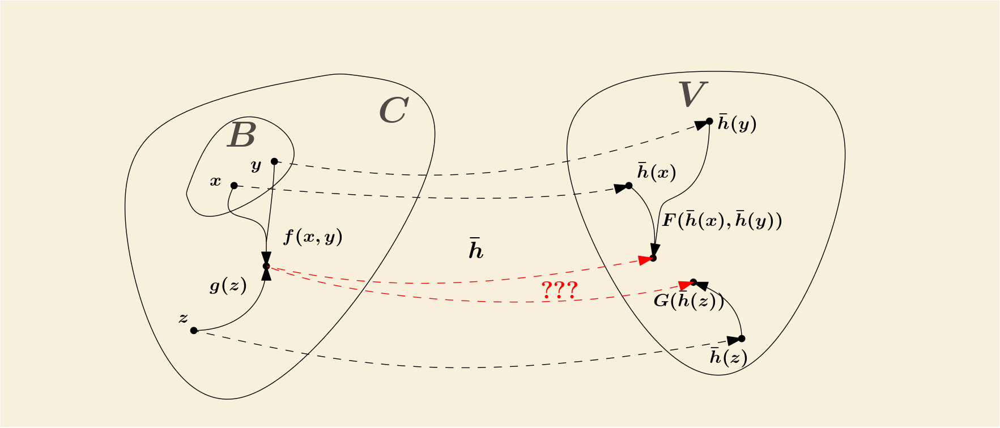
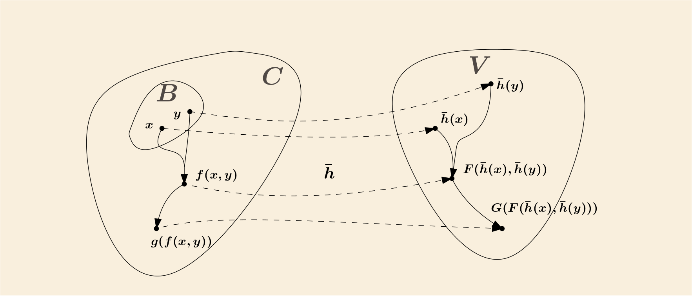

Induction
归纳（Induction） 是数学中非常常见的一种构造：由属于集合 \(U\) 的一些初始元素（initial elements）开始，不断应用一些特定操作，而最终获得的一个 \(U\) 的子集
我们感兴趣的是包含这些初始元素并闭合于（closed under）这些特定操作的最小集合
一个直接的例子：\(U\) 是所有表达式的集合，初始元素是所有命题符号（sentence symbol），操作是 \(\varepsilon_{\neg}, \varepsilon_{\wedge}\) 等， 最终构造出的子集则是所有合式公式（well formed formulas, wffs）的集合
为了易于讨论（也基本不失一般性），考虑初始元素集合 \(B \subseteq U\)，一组函数 \(F\)，仅包含两个函数
\[ \begin{gather} f: U \times U \rightarrow U \\ g: U \rightarrow U \end{gather} \]
如果 \(B\) 包含 \(a, b\) 两个元素，则那个我们希望构造得到的集合 \(C\) 就会包含诸如
\[ b,\; f(b, a),\; g(a),\; f(g(a), f(b, b)) \]
等等；注意，它们未必是相异的，例如有可能 \(b\) 和 \(g(a)\) 是同一个元素
下面 formal 地定义 \(C\)，有两种方式，一种“自顶而下”（from the top down），一种“自底而上”（from the bottom up）
From the top down
- Closed
- 若 \(S\) 是 \(U\) 的一个子集且满足：只要 \(x\) 和 \(y\) 都属于 \(S\)，则 \(f(x, y)\) 和 \(g(x)\) 也属于 \(S\)； 则称 \(S\) 闭合于（closed under） \(f\) 和 \(g\)
- Inductive
- 若 \(B \subseteq S\) （即初始元素集合是 \(S\) 的子集）且 \(S\) 闭合于 \(F\)（即 \(f\) 和 \(g\)）； 则称 \(S\) 是 inductive 的
令 \(C^{ * }\) 是所有 inductive 集的交集，亦即如果 \(x \in C^{ * }\) 当且仅当 \(x\) 属于所有 inductive 集
容易看出 \(C^{ * }\) 本身也是 inductive 的，因为：
- \(B \subseteq C^{ * }\)，因为 \(B\) 是所有 inductive 集的子集，故也是 \(C^{ * }\) 的子集了
- 如果 \(x, y\) 属于 \(C^{ * }\)，则 \(x, y\) 也属于所有 inductive 集， 由闭合特性，\(f(x, y), g(x)\) 也属于所有 inductive 集，则 \(f(x, y), g(x)\) 也属于 \(C^{ * }\)
所以 \(C^{ * }\) 是所有 inductive 集中最小的那个，被所有其他 inductive 集包含
From the bottom up
另外一种（等价的）定义方式是对初始元素集 \(B\) 中的元素应用有限次操作而得到的
- Construction Sequence
-
构造序列（construction sequence） 是指一个有限的序列 \(\langle x_1, ..., x_n \rangle\)， 且对于任意 \(i \le n\)，\(x_i\) 至少满足以下其一（如上所述，应用了 \(f,g\) 后的结果未必相异，故有可能同时满足多个）：
- \(x_i \in B\)
- \(x_i = f(x_j, x_k)\) 其中 \(j < i, k < i\)
- \(x_i = g(x_j)\) 其中 \(j < i\)
换句话说，构造序列里的每一项要么属于 \(B\)，要么是由早先的项应用 \(f\) 或者 \(g\) 获得
若 \(x\) 是一个长度为 \(n\) 构造序列的最后一项，如 \(\langle x_1, ..., x_{n-1}, x_n = x \rangle\)，则称 \(x\) 有一个长度为 \(n\) 的构造序列 （\(x\) 的构造序列里是可以包含有“垃圾”，即跟 \(x\) 完全无关的其他项）
令 \(C_n\) 为所有有长度为 \(n\) 的构造序列的元素，易知 \(C_1 = B\)，且
\[ C_1 \subseteq C_2 \subseteq C_3 \subseteq ... \]
令 \(C_{ * } = \bigcup_n C_n\) 即所有 \(C_n\) 的并集
Equivalent of the above two definitions
要证明 \(C^{ * } \subseteq C_{ * }\) 只需要证明 \(C_{ * }\) 是 inductive 集即可，因为 \(C^{ * }\) 被所有 inductive 集包含
- 如果 \(x, y \in C_{ * }\)，即 \(x, y\) 均有构造序列，将这两个构造序列串联起来，再添加上 \(f(x, y)\)， 则这个新的序列就是 \(f(x, y)\) 的构造序列，故它也包含在 \(C_{ * }\) 中，同理 \(g(x)\)，故 \(C_{ * }\) 闭合于 \(F\)； 又已知 \(B \subseteq C_{ * }\)，所以 \(C_{ * }\) 是 inductive 集
要证明 \(C_{ * } \subseteq C^{ * }\)，考虑任意 \(x \in C_{ * }\)，并有构造序列 \(\langle x_1, ..., x_{n-1}, x_n = x \rangle\)， 对 \(n\) 进行归纳可证明 \(x \in C^{ * }\)
- 显然 \(x_1 \in B \subseteq C^{ * }\)；若 \(i < j\) 都有 \(x_i \in C^{ * }\)，则 \(x_j \in C^{ * }\) 因为要么 \(x_j \in B\) 要么 \(x_j\) 由前面的项应用 \(F\) 而得，而 \(C^{ * }\) 是闭合于 \(F\) 的
所以两者其实是等价的
\[ \bigcup_n C_n = C_{ * } = C^{ * } = \bigcap \{ S\; |\; S\; inductive \} \]
因此可以直接统一称为：由初始集 \(B\) 应用 \(F\) 生成的集合 \(C\)（set generated from \(B\) by functions in \(F\)）
Induction Principle
令 \(C\) 是由初始集 \(B\) 应用 \(F\) 生成的集合，如果集合 \(S\) 是 \(C\) 的子集，且 \(S\) 包含 \(B\)，以及 \(S\) 闭合于 \(F\)， 则 \(S = C\)
所以 \(S\) 是 inductive 集，故 \(C = C^{ * } \subseteq S\)；又假设里已经有 \(S \subseteq C\)；所以 \(S = C\)
Recursion
令 \(C\) 为由初始集 \(B\) 应用 \(f\) 和 \(g\) 生成的集合，有时候我们希望在 \(C\) 上递归地（recursively）定义一个函数 \(\bar{h}\)
具体地，假如有一个集合 \(V\)，以及函数 \(h, F, G\)：
\[ \begin{split} h: B \rightarrow V & \\ F: V \times V \rightarrow V & \\ G: V \rightarrow V & \end{split} \]
是否可以定义一个函数 \(\bar{h}: C \rightarrow V\)，使得
- 若 \(x \in B\) 则 \(\bar{h}(x) = h(x)\)
- 若 \(x, y \in C\)，则有
- \(\bar{h}(f(x, y)) = F(\bar{h}(x), \bar{h}(y))\)
- \(\bar{h}(g(x)) = G(\bar{h}(x))\)
首先如果这样的函数存在的话，它必然是唯一的：对 \(C = C_{ * }\) 以 \(n\) 进行归纳可知所有元素都被上面三种情况所覆盖， 因此它们的函数取值都是固定的唯一的（如果 \(C\) 中有元素不被上述三种情况覆盖，则取值任意，\(\bar{h}\) 就不唯一了）
那有没有可能这样的函数是不存在的呢？考虑以下例子
- \(B = \{0\}\)
- \(f(x, y) = x \cdot y\)
- \(g(x) = x + 1\)
- \(\bar{h}(0) = 0\)
- \(\bar{h}(f(x, y)) = \bar{h}(x) \cdot \bar{h}(y)\)，即 \(F(X, Y) = X \cdot Y\)
- \(\bar{h}(g(x)) = \bar{h}(x) + 2\)，即 \(G(X) = X + 2\)
注意到 \(g(0) = 0 + 1 = 1 = 1 \cdot 1 = f(1, 1) = f(g(0), g(0))\)，也即 \(1\) 可以同时由 \(f\) 和 \(g\) 生成， 因此计算 \(\bar{h}(1)\) 要同时满足以下
- \(\bar{h}(1) = \bar{h}(g(0)) = \bar{h}(0) + 2 = 2\)
- \(\bar{h}(1) = \bar{h}(f(g(0), g(0))) = \bar{h}(g(0)) \cdot \bar{h}(g(0))\)
但这是无解的

这其中的问题在于，如果 \(C\) 中有元素是可以被多种方式生成，例如上面例子 \(f\) 和 \(g\)，而对应的 \(F\) 和 \(G\) 却给出了不同的值或矛盾的条件； 因此我们还需要一个额外的约束：
- Freely
-
若 \(C\) 是由初始集 \(B\) 应用 \(f, g\) 生成，且满足以下
- \(f, g\) 均为单射函数（one-to-one）
- \(f\) 的值域，\(g\) 的值域以及 \(B\) 两两无交集（pairwise disjoint）
则称 \(C\) 是由初始集 \(B\) 应用 \(f, g\) 自由（freely）生成的；这就意味着 \(C\) 中任意一个元素都只有唯一一种“生成方式”
下面是这一章节的主要结论
Recursion Theorem
若 \(C\) 是 \(U\) 中由初始集 \(B\) 应用 \(f, g\) 自由生成的集合，其中
\[ \begin{split} f: U \times U \rightarrow U \\ g: U \rightarrow U \end{split} \]
\(V\) 是一个集合，\(h, F, G\) 是函数
\[ \begin{split} h: B \rightarrow V \\ F: V \times V \rightarrow V \\ G: V \rightarrow V \end{split} \]
那么存在唯一一个函数
\[\bar{h}: C \rightarrow V\]
满足
- 若 \(x \in B\) 则 \(\bar{h}(x) = h(x)\)
- 若 \(x, y \in C\)，则有
- \(\bar{h}(f(x, y)) = F(\bar{h}(x), \bar{h}(y))\)
- \(\bar{h}(g(x)) = G(\bar{h}(x))\)

Viewed algebraically, the conclusion of this theorem says that any map \(h\) of \(B\) into \(V\) can be extended to a homomorphism \(h\) from C (with operations \(f, g\)) into \(V\) (with operations \(F, G\)).
一个直接的例子：
- \(B\) 是命题符号集
- \(f\) 是 \(\varepsilon_{\wedge}\)，即将两个表达式用 \(\wedge\) 连接成为新的表达式的函数
- \(g\) 是 \(\varepsilon_{\neg}\)，即为一个表达式添加 \(\neg\) 成为新的表达式的函数
- \(V = \{true, false\}\)
- \(h\) 是对命题符号的赋值，truth assignment，即对每一个命题符号赋予 true 或者 false
- \(F\) 是 ‘and’ 函数，即仅当两个参数都是 true 时返回 true
- \(G\) 是 ‘neg’ 函数，即当参数为 true 时返回 false, 参数为 false 时返回 true
- 则最终 \(\bar{h}\) 是合式公式的赋值函数，即给定一个合式公式，返回其 truth value